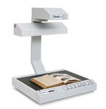
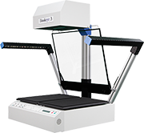
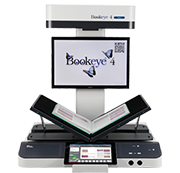
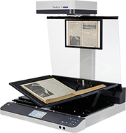

The Industry Standard Book Scanner Bookeye®
Scan2Net® Technology as the Basis of the Bookeye® Book Scanner
The Scan2Net® technological platform forms the basis of all Bookeye® book scanners and WideTEK® large format scanners. Scan2Net® eliminates the need for proprietary drivers and interface cards and uses what is currently fastest, open connection to PC-based systems: TCP / IP over Ethernet.
Scan2Net® – the firmware kernel on all Image Access scanners- is compatible with operating systems such as Windows, Linux, Mac OS, Unix and all Web browsers like Internet Explorer, Safari, Chrome and Firefox.
The numerous new features of HTML5 markup language, which is already implemented in most browsers, further extend the capabilities of the scanners.
A 64 bit Linux-based, virus protected operating system enables faster internal processing of the image data and optimizes the scanning process.
The latest generation of Intel processors make Scan2Net devices highly energy efficient. Thanks to the 4 GB of RAM, very large volumes of data can be processed at remarkable speeds and virtually unlimited job sizes are possible.
Bookeye® - A Book Scanner Success Story for Over 18 Years
The Bookeye® brand of overhead book scanners from Image Access has been a synonym worldwide for gentle and protective digitization of bound and stapled documents in large and smaller formats over the past 18 years.
The first generation of Bookeye® book scanners was developed in 1995, a grayscale system for documents up to A3 format. A year later, you could already scan documents in the A2+ format.
This was followed by the models Bookeye® 2 and Bookeye® 2 plus, which were built between 2000 and 2011. The Bookeye® 2 was the first color book scanner from Image Access and with over 2,500 successful installations around the globe.
® 2plus - Book Scanners for Libraries and Archives" alt="Bookeye® 2plus - Book Scanners for Libraries and Archives" hspace="10" vspace="10" align="left"/>Bookeye® 2 was available in various different versions: up to A1+ size, with reproduction lighting, automatic book cradle and glass plate, depending on the requirements the customer had. From the beginning, all Bookeye® 2 book scanners had low emission lamps.
Eight years of experience with Bookeye® 1 and Bookeye® 2 in library and archive environments and the rapidly growing installation base, a third Bookeye® book scanner was developed in 2004. With this system, Image Access addressed the ever increasing demands from the market to satisfy requirements for mass digitization projects, which depend on stability, productivity and high image quality. The Bookeye® 3 family of book scanners was born - digitizing documents up to A1+ in size and with 600 dpi optical resolution, distinguished by an integrated, automatic book cradle with an optional glass plate and a completely revised illumination system which featured UV- and IR-free LED lamps.
® 3 - Ideal book scanner for gentle scanning" alt="Bookeye® 3 - Ideal book scanner for gentle scanning" hspace="10" vspace="10" align="left"/>Customers appreciated the universal applicability of the Bookeye® 3 and the excellent quality of the scan results. A perfect example of the unique and universal qualities of the the Bookeye® 3 was the implementation of over 90 Bookeye® 3 book scanners in the Japanese Parliamentary Library, in which not only the highest quality scanning results were required but also that the book scanners are tough enough to withstand 24/7 operation.
Unique V Shaped Cradle Again Sets Standards
® 4 V2 Book Scanner for Formats up to DIN A2+" alt="Bookeye® 4 V2 Book Scanner for Formats up to DIN A2+" hspace="10" vspace="10" align="left"/>At CeBIT 2010, the Bookeye® 4 product family was launched. Once again, all the experience and requirements of what had grown to over 4,000 installations were compiled and implemented into a completely new book scanner concept. The attributes that set Bookeye apart from other book scanners on the market remained - - high productivity and top quality of the scanner, scanning documents up to A1+ at 600 optical dpi and a level of usability so simple that it could be implemented as a self service device.
New and unique to the Bookeye® 4 book scanner family is the integrated V shaped cradle that allows users to scan documents lying flat, as well as originals opened in the 120 degree V shaped cradle for maximum protection to the document´s spine.
® 4 V1A - Protective V Shaped Cradle 140° to 180°" alt="Bookeye® 4 V1A - Protective V Shaped Cradle 140° to 180°" hspace="10" vspace="10" align="left"/>Controls such as a large color WVGA touchscreen, trigger buttons on the scanning area or a large preview monitor, attached ergonomically optimized at the rear of the scanner, round out the brilliant technical features of the Bookeye® 4.
All Bookeye® book scanners are CE, UL, cUL, WEEE, RoHS and Energy Star compliant.
Major international Bookeye book scanner installations include:
- In National Libraries (India, Mongolia, Kazakhstan, Russia, Japan, Nigeria, Norway)
- In National Archives (Venezuela, Seychelles, Estonia)
- In universities (Queens University Belfast, Harvard University, USA, Benaras Hindu University in India, King Saudi University, University of Bratislava , Universidad de las Americas, Mexico)
- In museums (The Museum of Modern Art, National Museum, New Delhi)
- And in many, many other public and private institutions